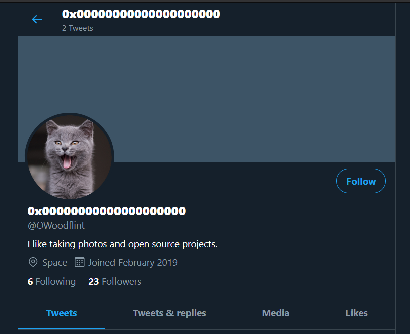

OWoodflint sounds like a username, and fair enough, a simple Google search brings up the following twitter account:

From among his tweets:

We also have a blog: https://oliverwoodflint.wordpress.com/author/owoodflint/
The blog's source code has a weird hidden text in it: